Pay-par-views (ppv)
Os ppv da WWE ocorrem semanalmente, sendo o RAW, NXT e SmackDown e em meses específicos do ano, então vamos falar sobre cada um deles, começando pelos semanais.
RAW
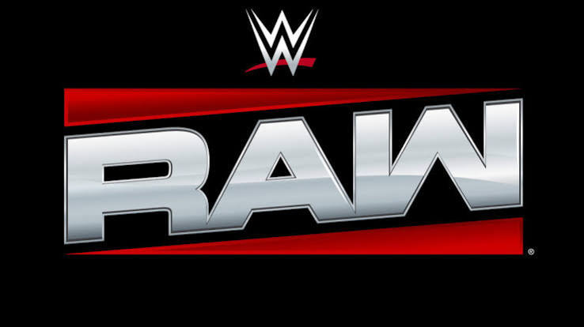
Nas segundas feiras, temos o primeiro show semanal, o Monday Night RAW, ou só RAW, que é como o SmackDown das segundas feiras. Transmitido na Netflix ao vivo a partir da 21:00, que temos os segmentos, lutas curtas e desafios ao título ou a algum lutador sem ser campeão
Antigamente, não existia RAW, e sim o WWF Superstars, que durou até o surgimento do Monday Night RAW em 1993.
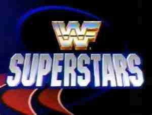
NXT
Nas terças feiras, temos o NXT, o programa nascido em 2010 para futuros lutadores no main roster. também tem os prŕoprios programas, alguns já sendo programas do roster principal da WWE, como Vengeance.
SmackDown
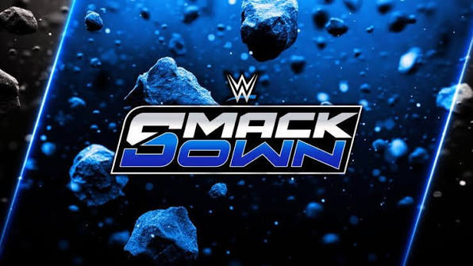
Nas sextas feiras, temos o SmackDown que, resumidamente, é o Raw nas sextas.
Surgiu em 1999, para não ter apenas shows nas segundas feiras.
Royal Rumble

Em janeiro, temos o ppv Royal Rumble, que abre as portas para a Wrestlemania, sendo o ppv mais importate do pro-wrestling. O ppv consiste em 4-5 lutas principais, começando com a luta eliminatoria feminina. Começa com duas mulheres no ringue e, a cada 2 minutos, aparece mais uma lutadora. A lutadora que sair do ringue por outra lutadora é eliminada, o mesmo para a luta masculina. o vencedor e vencedora enfrentara o campeão e campeã de sua escolha, na WrestleMania.
Elimination Chmaber
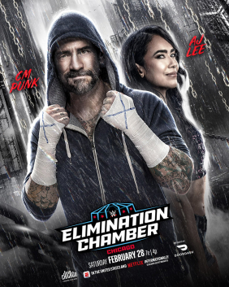
Em fevereiro, temos o Elimination chamber que, assim como o Royal Rumble, abre a vaga para a WrestleMania, porém temos 6 lutadores numa câmara de eliminação. Começa com dois lutadores e, a cada 5 minutos, um novo lutador entra no ringue e é eliminado aquele que for submetido ou perder por contagem de 3, assim para as mulheres também.
WrestleMania
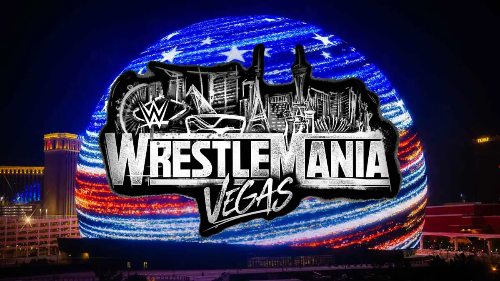
O evento mais importanteda WWE e do pro-wrestling acontece em março-abril, a Wrestlemania, com duas noites desde 2020 e surgido em 1985. O evento foi criado para salvar a WWE, na época WWF, pois estavam passando por muitas dificuldades e a luta principal, Hulk Hogan e Mr T vs Rowdy Pieper e Mr. Wonderful rendeu várias críticas positivas quanto ao esperado e começou a ser tratado como o evento mais importante desde então.
Porém, o evento não é o mais importante só por causa das lutas e tals, existem outros motivos para o público sempre querer ver a WrestleMania, vamos falar sobre um que é sempre lembrado como o mais importante.
The Streak
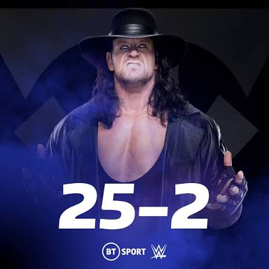
A Streak do Undertaker é sem dúvidas o motivo mais falado sobre WrestleMania. Com 25 vitórias, sendo 21 delas consecutias e apenas duas derrotas. Sempre que Undertaker vencia uma luta na WrestleMania, ele conquistava naõ apenas uma vitória, mas sim algo que marcaria sua carreira para sempre. Em 1991, ele venceu sua primeira WrestleMania, derrotando Jimmy Snuka na WrestleMania 7.

Ele venceu Wrestlemania com várias estipulações e as lutas mais marcantes, sendo a favoritas do público a WrestleMania 25, um combate não só épico, mas também histórico contra Shawn Michaels.

Essa foi declarada por quase todos como a melhor da história da WWE.

Em 2014, Undertaker enfrentou Brock Lesnar e... Perdeu a luta. Foi um choque tremendo, a platéia ficou sem reação, não sabendo se vaiava ou se aplaudia ou se chorava.
Backlash
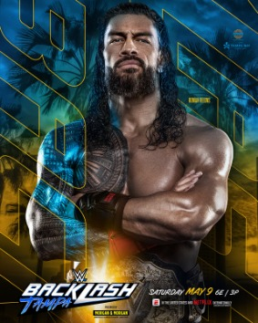
O evento que vem logo após a Wrestlemania é o backlash, o evento que encerra várias rivalidades. Criado em 1999, num pay-par-view que deu origem a vários outros ppv, o In Your House.
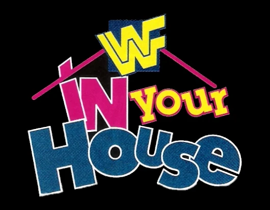
a partir do ano seguinte, o backlash se tornou um evento independente.

Clash in
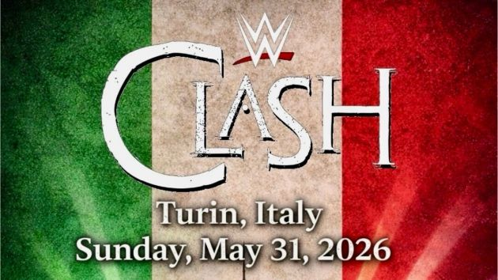
O pay-par-view Clash in é um evento que acontece na Europa, criado em 2022, que aconteceu no País de Gales, sendo chamado de Clash at the Castle
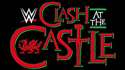
A cada ano, eles fazem o Clash num país diferente. Em 2023, não aconteceu o Clash, e em 2024, foi feito o Clash in the Castle na Escócia.

No ano seguinte, 2025, foi feito o Clash in Paris e, pela primeira vez, não teve o nome Clash in the Castle.

Nesse ano (2026), aconteceu na Italia, na capital Roma, que foi marcado principalmente pela luta entre Brock lesnar e Oba Femi.

King of The Ring

Enquanto o Royal Rumble abre uma vaga para a Wrestlemania, o King of The Ring é um torneio, onde o campeão é conhecido como King of The Ring e a campẽa é conhecido como Queen of The Ring, onde o vencedor encara o campeão ou campeã no SummerSlam. Os torneios são transmitidos em shows do RAW e SmackDown

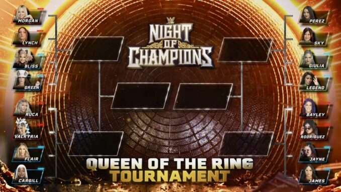
O pay-par-view deu sua estreia em 1993 e, naquela época, não havia Quuen of The Ring ainda

Foi apenas em 2021 que houve o primeiro Queen of The Ring, que na época foi chamado de Queen's Crown.
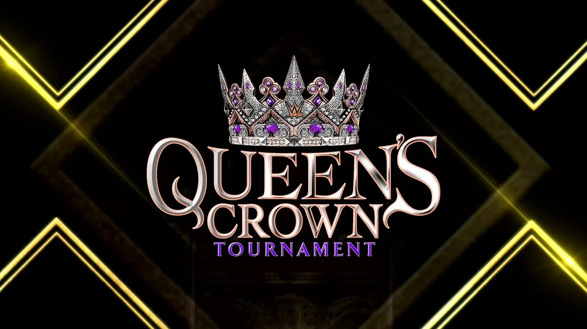
SummerSlam
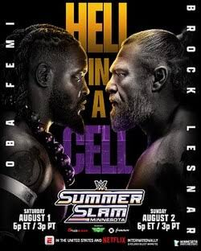
Após o King of The Ring, temos o SummerSlam, o show do verão. O show tem a temática de uma WrestleMania, mas as vezes, muitas pessoas dizem que o SummerSlam é melhor que a WrestleMania.
Deu origem em 1988 no Madison Square garden, onde é conhecido como a casa da WWE.

Money in The Bank
<